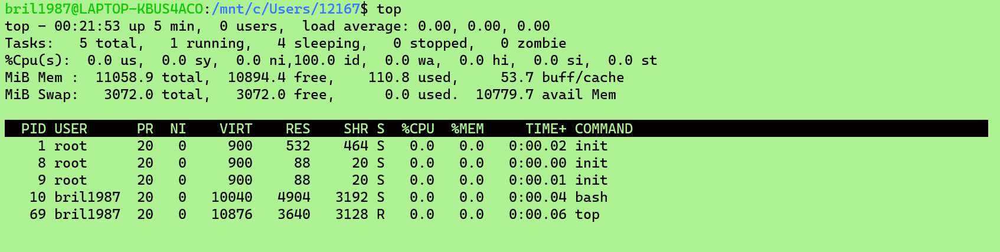
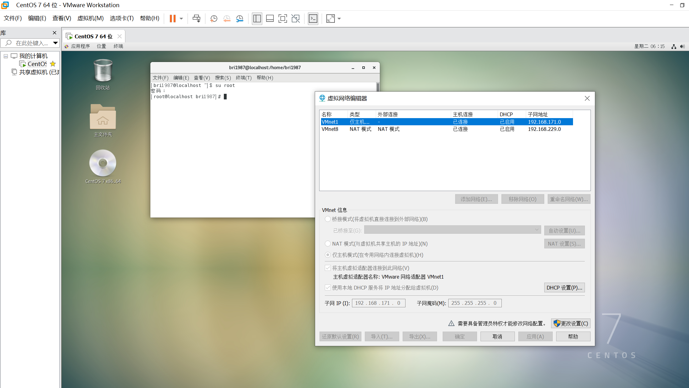
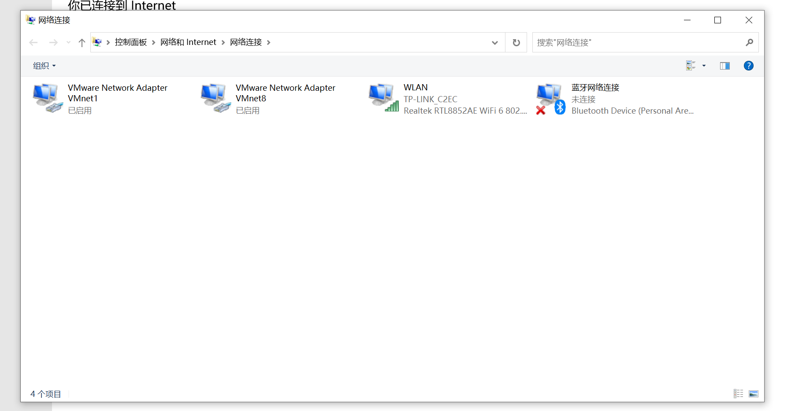
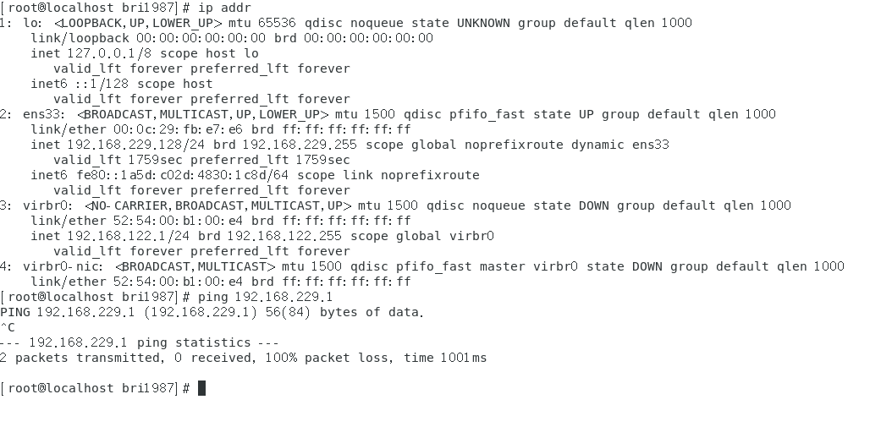
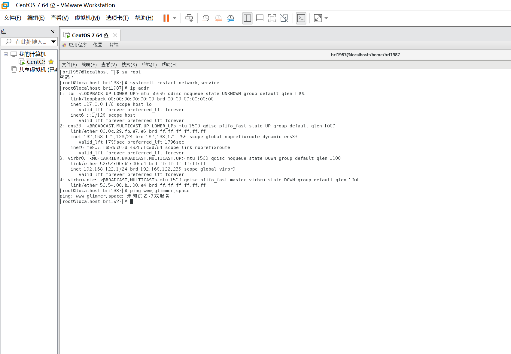
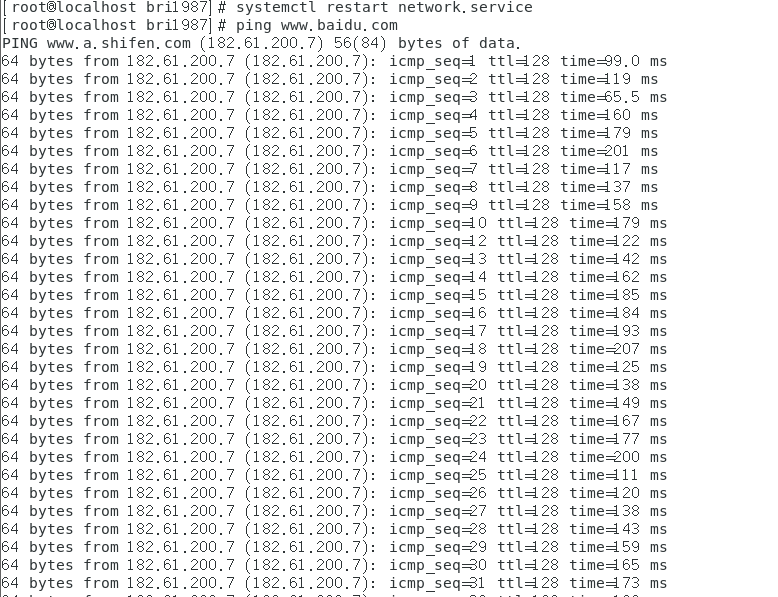
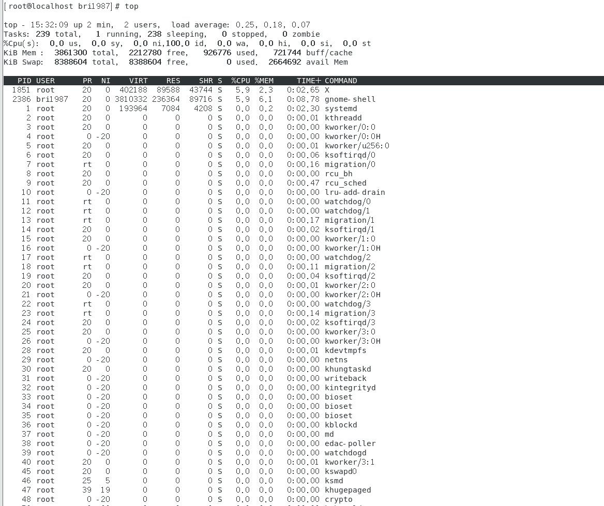
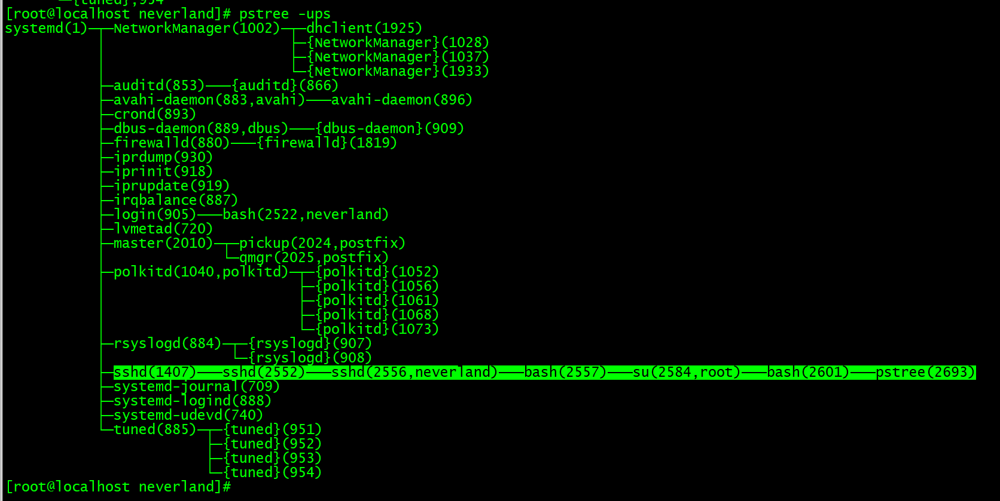
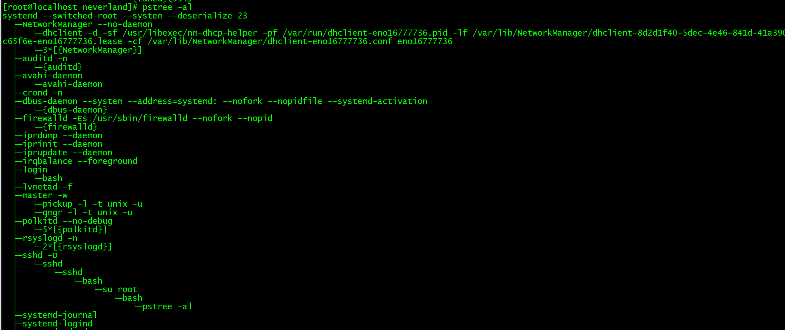
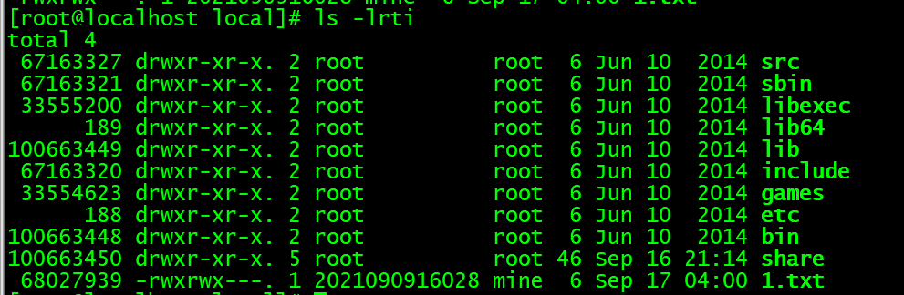

2021090916028 -刘诗月-考核-后端-01
一.什么是LINUX及linux发行版
linux 是遵循GPL协议（可以复制软件、修改源码、修改后再次发行，但不能取消以free为核心的GPL授权），基于完全开源的内核基础上开发的类UNIX的开源操作系统.
linux发行版（可完全安装套件）是由linux内核，GNU工具(1994年UNIX有上百个组件，Richard研发的GNU为这些组件中的几乎每个组件开发自由的替代品，除了内核这个重要组成部分）和库（包含许多基本工具的GNU软件包）以及软件集合构成的操作系统。
各个发行版使用同样的linux内核，但不同的发行版会为用户提供不同的软件、工具和桌面环境，发行版本有ubuntu,red hat,centos等等。
二.题目截图（包含拓展选做）
1.搭建的虚拟机

其实最开始使用的是wsl子系统

但后来发现进行top命令的时候是0 users，就放弃了

第一次搭建虚拟机的时候，镜像文件在itllyou上下载成了windows的镜像，还卡了很久.....发现之后很无语，就挺傻的

2.网络情况分析


（1）
未使用桥接模式，即未使用有线网卡
（2）
连接了仅主机模式，即通过DHCP服务，由服务器控制一段IP地址范围，当用户登录服务器时，获得IP地址（子网IP: 192.168.171 .0）与子网掩码（255. 255. 255. 0），并分配给虚拟器，但此模式无法访问外部网络。
可以与物理机互相访问

但无法访问外部网络

（3）
已连接NAT模式，提供DHCP服务，并且可以访问外部网络。

3. 执行TOP命令并简单分析执行内容

第一行
系统时间：15：32：09
uptime,系统自上次启动以来的使用时间：2min
当前登录用户： 2 users
最近5、10、15分钟内的平均负载:load average: 0.25,0.18,0.07（平均负载是指单位时间内，系统处于可运行状态和不可中断状态的平均进程数）
第二行
tasks任务
总进程239，运行1，休眠238，停止0，僵尸进程0（僵尸进程是指一个已经终止、但是其父进程尚未对其进行善后处理获取终止进程的有关信息的进程）
第三行
cpu状态信息
user space:用户空间占用cpu百分比0.0 %
sysctl:内核空间占用CPU百分比0.0%（sysctl命令被用于在内核运行时动态地修改内核的运行参数，可用的内核参数在目录/proc/sys中）
niced:改变过优先级的进程占用CPU的百分比：0.0%
idle:空闲CPU百分比:100%
wait: IO等待占用CPU的百分比（在计算机系统中I/O就是输入(Input)和输出(Output)的意思，只要具有输入输出类型的交互系统都可以认为是I/O系统）
hardware IRQ:硬中断占用CPU的百分比：0.0%（IRQ全称为Interrupt Request，即是“中断请求”的意思，执行硬件中断请求的动作）
Software Interrupts：软中断占用CPU的百分比0.0%
st：虚拟机占用CPU百分比
第四行
内存状态，其中used为系统内核控制的内存数，buff为缓存的内存量
第五行
swap交换分区信息（通过在硬盘中预先划分一定的空间，然后将把内存中暂时不常用的数据临时存放到硬盘中，以便腾出物理内存空间让更活跃的程序服务来使用的技术）
其中avail mem为可用内存
第七行后
Process Identifier（进程标识符），user（进程所有者）
PR进程优先级，nice值表优先级
VIRT（virtual memory usage）进程使用虚拟内存总量（SWAP+RES）
RES（resident memory usage）常驻内存（进程当前使用的内存大小）
SHR共享内存的大小
S为进程状态休眠，R为进程状态运行
%CPU:上次更新到现在的CPU时间占用百分比
%MEM：进程使用的物理内存百分比
TIME+：进程使用的CPU时间总计，单位1/100秒
COMMAND：进程名称
4.随便创建一个文件，并写点东西

5.创建用户名为学号的新用户，并切换至该用户访问之前的文件

说实话，创建用户名为学号的新用户这里，在我还在使用wsl子系统的时候我卡了很久，查了一下发现它说我这个新用户的名字不符合正则表达式：


后来用虚拟机，secureCRT之后就没有碰到这个问题了？
6.更改txt的权限，使学号用户无法访问

7.改变此文件的所属用户和组，两个用户分别查看，并分析结果为何这样


因为设置了权限700，只有所属用户可以对该文件进行读写执行，用户组与其他用户则对这个文件没有任何权利
8.将最开始的用户加入用户组，再次访问


最开始仍是700的权限设置，所以即使加入了用户组，也仍然无法访问。改成了770的设置后，用户组也具有了读写执行的权利，原来用户虽然是others，但因为和学号用户在一个用户组中，所以也可以访问。
9.拓展选做1：了解一下进程概念
打开任务管理器就能看到进程，可以发现平时我们打开一个应用软件，其实也就是开启了一个进程。电脑把如图所示的资源（CPU资源、内存资源、磁盘资源...）分配给各个进程，进程就是电脑分配资源的一个最小单位。
进程的狭义定义是正在运行的程序的实例，它动态产生动态消亡、能与其他进程并发运行，且进程间不会相互影响，它是一个能独立运行的基本单位，同时也是系统分配资源和调度的独立单位。

进程是线程的容器，一个进程包含多个线程，线程必须在进程的前提下才能运行，无法独自运行。就比如我们打开了qq,整个qq程序是一个进程，进入qq后打开的各种聊天窗口，用qq进行的传文件等等，它们就是一个个线程，无法脱离qq进程运行，但共用qq这个进程的资源。
10. 拓展选作2：查看占用80端口的进程
最开始的时候，发现我的80端口都是关着的：

打开之后，发现它只有监听：

查了一下，发现-l仅显示连接状态为listen的服务的网络状态，而我应该加个 -a显示本机的所有连接和监听端口，-p是显示连接对应PID与程序名：

这时可以看到显示了active internet connections，即浏览器已开启。
后来发现，浏览器好像是会自动开启的吗？最开始我为了让它开启费尽心力，甚至用到一些links+命令：
11.拓展选作3：挂起ping+本地ip，再重新进行

12.拓展选作4：挂起后杀死


即想再运行，发现已终止
最开始一直以为杀死是ctrl+ c，查了一下，ctrl+c是终止当前在终端窗口运行的命令或脚本，kill的话杀得挺全能的，而且如果给什么-9，-15，相当于能带来不同的杀法，比如-15就杀得很优雅。
13.拓展选做5：执行pstree命令

pstree显示所有正在运行的进程的分层树结构，只显示进程的名字，相同进程合并显示
systemd为所有系统进程的父进程，PID=1,也是启动时启动的第一个进程, pstree -s会显示所有子进程的父进程。
{}为子线程，比如polkitd(1040)有5个子线程（1052，1056，1061，1068，1073），而显示出的子进程无{}，比如login(905)的有一个子进程（2522）
每个进程或线程（线程是进程的一个实体，是进程的一条执行路径）的括号中都显示PID，即括号内的数字

pstree -a显示了每个程序的完整指令及参数，包含路径
三.对Linux文件属性和用户权限管理大致理解
linux文件属性

第一列：i节点（以链接为文件的指针，指向文件数据的地址；硬链接(ln)，因为i节点和源文件一样，i节点记录的链接即使源文件消失也有作用，软链接（ln -s)则i节点号不同，删除源文件后，软链接不可用），一个i节点可对应多个文件，而一个文件只能对应一个i节点
第二列：文件的类型与权限
-:文件
d:目录
r：读权限，对应4；w：写权限，对应2；x：执行权限（这来源于二进制，有权限用1表示，没有权限用0表示，转换为10进制即为我们现在使用的数字），对应1（第二列共分为三组，对应权限人员分别为user,group,others)
第三列：有多少文件名链接到了此节点：2，5，1
第四列：该文件的所有者
第五列：该文件的所有组
第六列：以B为单位的容量：6，46
第七列：文件创建或最新修改的时间
第八列：文件名
用户权限管理（其实不太清楚是需要我写什么）
root：超级用户，UID=0,不受限制，有些程序只有root才能进行，比如说/sbin目录下的命令程序，有点类似于windows系统中的管理员吧。
普通用户：具有一定限制，UID：500-60000，有些程序命令所有用户都能执行，比如/bin目录下的，当然也可以执行它自己家目录 下的命令。它的账号信息放在/etc/passwd下，密码信息放在/etc/shadow下。
关于root与普通用户的文件权限
发现文件创建后，默认状态下root和普通用户拥有的权限在用户组上还有小小的不同
一般权限有关的是后三个数字，即它的默认权限，新建文件，默认没有可执行权限，只有r，w权限，0代表拥有全部rw权限；2代表没有写的权限，只有读权限
系统用户：不登录系统，一般是用来维持某个服务程序的。UID :1-499


四. 顺便贴一个学习基本命令时的笔记（虽然好像没有什么意义）
相关命令学习
-
cd：切换目录
cd - 回到上一目录
-
ls : 列出当前目录内容，ls [参数] [路径或选项]，eg. ls -lrt /home/(lrt可缩写为ll，参数可一起使用)
ls -a ：显示隐藏文件
ls -l :列表形式列出
ls -lt 以时间顺序列出
ls-ltr ：日期升序排列
-
cat:查看小文件内容
cat -n :排序文件内容
cat >123.txt:可在该文件中输入内容
-
move: 查看大文件内容
空格键可翻页，按住q可退出
-
head: 查看文件前十行
head 20 ：可查看20行
-
tail :查看文件后世行
tail 20 :查看文件后20行
tail -f :动态查看文件内容
-
touch :创建空文件，eg. touch 123.txt
-
mkdir :创建目录 eg. mkdir bri
mdkir -p ：无论是否有此目录，都会创建
-
pwd :查询所在目录
-
rmdir :删除目录
-
cp:拷贝文件
cp 需复制文件 复制到地址/
cp 需复制文件 复制到地址/新文件名（若用cp -a可复制文件属性）
-
mv:移动或更名
更名：mv 123.txt 345.php（将mv 123.txt改成345.php)
移动：mv 123.txt /home/ (将123.txt移动到home目录下),home/新名字
-
rm:删除文件，不可删除目录，无提示
rm-rf强制删除无提示,目录文件都可删除
-
diff :对比文件差异，diff 文件一 文件二
-
ssh: ssh ip地址（远程安全登陆方式）
-
id:查看当前用户
-
uname :查看系统信息
uname -a查看更详细的信息
-
ping:查看网络是否通
-
echo: 输出内容 ''
echo $?也可判断上一条命令是否正确
-
man:查看帮助文档（不知道命令加什么参数时，查看参数作用可使用）,man ls /-可搜索
-
help: 查看内部命令帮助（对于shell内置命令）
-
clear :清屏，=ctrl +l
-
who :当前登录用户信息
whoami
-
uptime:当前时间及运行时间
-
w:显示系统命令（类似uptime与who结合）
-
free: 查看内存使用情况
free -m：以 m为单位显示内存
free -h ：显示内存单位
-
wc:统计行数，wc -l 文件名
-
grep:查找文件里符合条件的字符串：grep '查找内容' 所在文件名 |wc-l（可统计）
grep -n :查看查找内容准确位置
grep -w ：精确匹配，普通198可能匹配出1980，而精确匹配只有198
grep -v:取反
grep -i :查找时忽略大小写
-
find :查找文件 ，find / -name ...,若再叠加-type f就是查找txt
-
uniq:对排序好的内容进行统计
uniq -c (count)计数
uniq -c | sort -n （+排列），sort:对内容进行排序
-
df:查看文件系统磁盘使用情况
-
netstat -tunlp:查看网络端口使用情况
-t:显示tcp端口
-u：显示udp端口
-n: 指明拒绝显示别名
-l：指明监听的
-p:：指明显示建立相关连接的程序。
-
hostname:显示主机名
-
ps:查看当前服务器进程
ps -ef:显示所有进程
常与grep命令连用查找特定进程，eg. ps -ef | grep ...(master为主进程，worker为副进程）)
ps -aux：可显示出cpu使用情况
-
kill:杀死进程，kill -l,kill -9 停止内容（强制停止）
-
top（按住键盘q退出）
-
du : 统计大小,直接du统计总和
du -sm:统计文件大小，以m为单位
du -sh
-
firewall-cmd --state:查看当前系统防火墙状态
-
cal命令：查看日历，eg. cal 2009
-
vi:命令模式
插入模式i，o，a
底行模式:
q! #强制离开不保存
wq #离开并保存
wq! #强制离开并保存
!ls #暂时离开